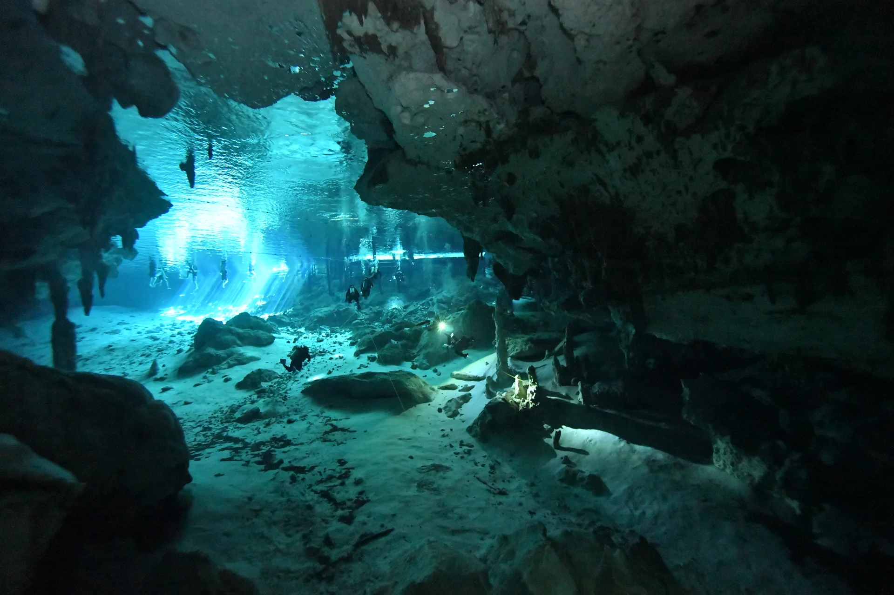
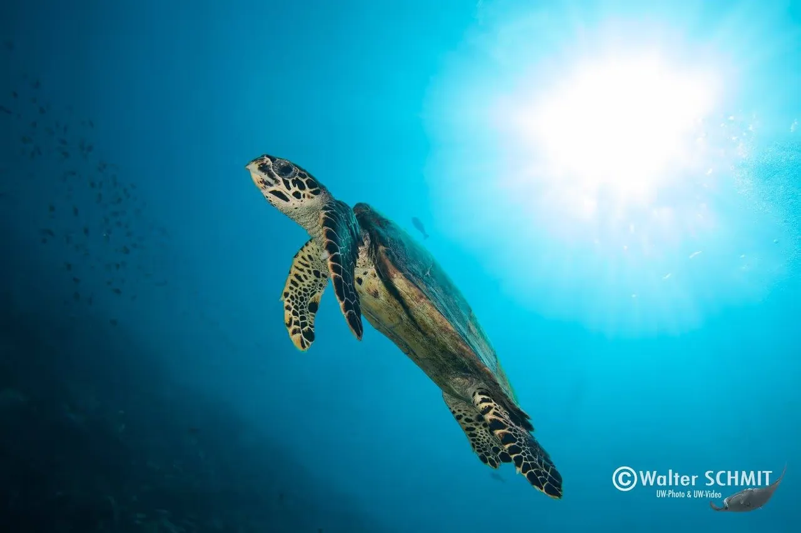
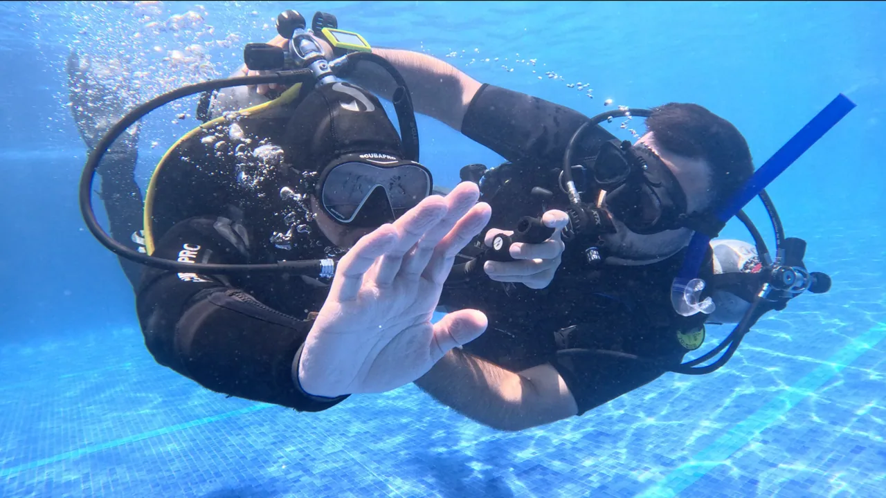
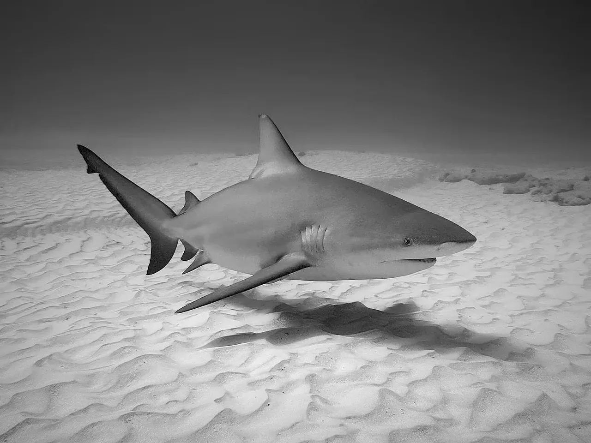
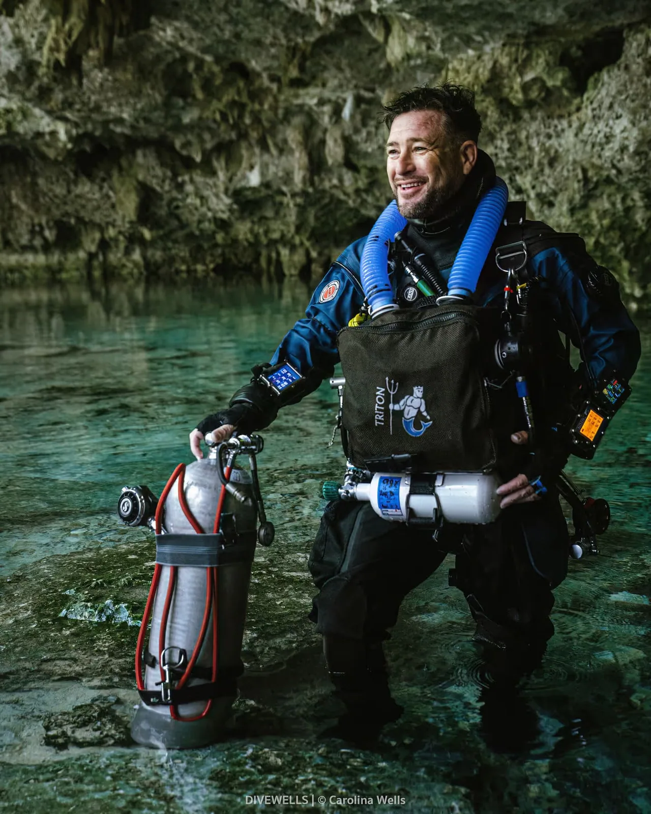

For certified divers
For certified diversSunlit caverns. Crystal-clear water. A different side of Mexico.
From 2,600 MXN2 dives · entrance fees extra

Cenotes, Caribbean reefs and a dive that feels like yours.
Discover Mexico with Devocean Divers.
There’s a whole world beneath the surface. We help you feel at home in it.
We’re Walter and Dorianne. From first underwater breaths to cave exploration and instructor training, our approach is personal: the right plan, the right pace, and room to enjoy the experience.
Get to know DevoceanDifferent worlds. Different levels.
One very personal experience.
For certified diversSunlit caverns. Crystal-clear water. A different side of Mexico.

Reefs & wrecksCaribbean reefs, turtles and the underwater world of Cozumel.

No certification neededStart with the basics. Discover the feeling of breathing underwater.
 For cave-certified divers
For cave-certified diversExplore beyond the light zone with a guide and a plan built around you.

November–MarchA close look at Playa del Carmen’s seasonal underwater visitors.
 Qualified CCR divers
Qualified CCR diversGuided CCR diving in the cenotes and caves of Quintana Roo.
 Technical divers
Technical diversOcean and cenote exploration for divers ready for a technical approach.
 Snorkelling excursion
Snorkelling excursionA boat day and a snorkelling experience with remarkable marine life.
Explore a few favourites, then tell us what interests you.
All diving experiences
Walter Schmit · Your guide beneath the surfaceGood diving starts with getting to know each other. Your experience, your goals, and the places you’ve been dreaming about.
Walter is a PADI and IDF Course Director, a technical instructor trainer and a cave instructor. Together with Dorianne, he brings that experience to a personal dive operation in Playa del Carmen.
Real moments from the world
we’re lucky to share.
Take your first course, develop new skills or turn a passion into a profession. We’ll help you find your next step.
Explore all coursesPADI · IANTD · IDF training pathways
Experiences shared by Walter’s students.
Guest storiesSean describes a varied instructor course, with practical workshops and individual support.
Winston highlights Walter’s patience, calm teaching and Dorianne’s help with logistics.
Victoria describes feeling supported from the first conversation through her Divemaster training.
Summaries of testimonials published by Devocean. Original programmes and dates are retained. Visit Tripadvisor
Choose an experience. Check the details.
Let’s put your trip together.
Published rates are a guide. Your final quote confirms dates, equipment, fees and booking conditions.
Yes — the Try-Dive experience starts with exercises in a pool or cenote and continues with an open-water dive. Tell us about your experience so we can recommend a suitable introduction.
For guided cavern excursions, Devocean requires at least Open Water certification and a minimum age of 15. Bring your certification card. Cave diving beyond the light zone requires separate cave training and certification.
Inclusions depend on the experience. Cenote entrance fees, camera fees and guide tips are additional. We will confirm equipment, course materials, certification costs and any other charges in your personal quote.
Send your dates, the number of divers, your certification level and the experiences you’re interested in. We’ll confirm availability, meeting arrangements, the full price and the applicable deposit and cancellation terms before you commit.
Tell us when you’re visiting and what you’d love to discover.
We’ll help you find the right dive.